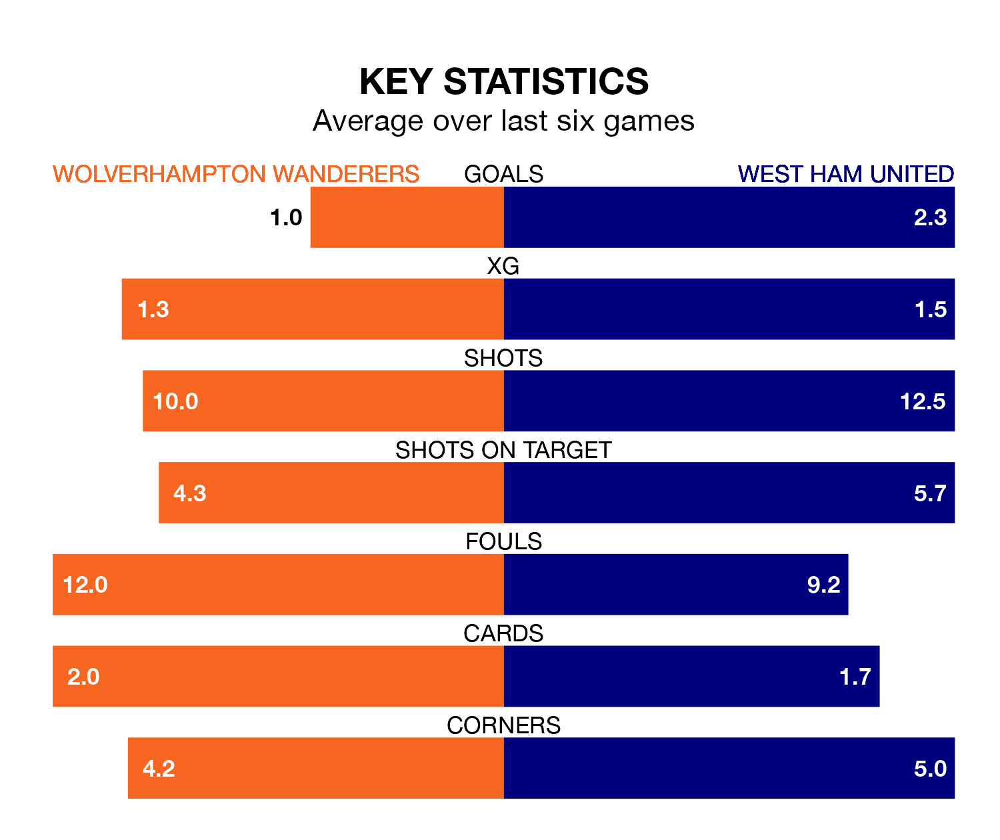

Wolverhampton Wanderers host West Ham United on Saturday at the Molineux Stadium in the Premier League.
In their last league match, on Tuesday, Wolves drew with Burnley 1-1 away, with their goal scored by Rayan Aït Nouri.
West Ham also drew, 1-1 at home against Tottenham Hotspur, with Kurt Zouma scoring their goals.
In the last 10 years, Wolves and West Ham have played each other on 12 occasions. They won six each.
On average, Wolves scored 1.0 goal and the Hammers 1.2 in those matches.
Their last meeting was on December 17, when West Ham won 3-0 at home.
With 43 goals in 30 games so far this season, Wolves are scoring at below the league average rate with 1.4 goals per game. And they are conceding at an average rate, letting in 47 goals at a rate of 1.6 per game.
West Ham, meanwhile, are average scorers, with 1.6 goals per game. They have conceded 1.8 goals per game.
In Jarrod Bowen, United have one of the league's most on-form strikers so far this season. He has notched 15 goals in 30 appearances, to sit fifth in the scoring charts.
His goal rate of one every 180 minutes is slightly quicker than that of Hee-Chan Hwang, the home team's top scorer with a goal every 162 minutes, and a total of 10 goals in 22 games.
The Hammers are seventh in the table after 31 games, of which they have won 12 and drawn nine, earning 45 points.
Wolves are three places behind the visitors in 10th, with 12 wins and six draws putting them on 42 points.
Wolves are in mixed form in the Premier League, with three wins and a draw from their last six games.
With two wins and three draws over that period, West Ham's form is slightly worse – they have taken nine points from 18, compared to the hosts' 10.
Saturday's match will be refereed by Tony Harrington, who has taken charge of six Premier League games so far this season, issuing one red card and booking 21 players. He has awarded one penalty.
The last Wolves game Harrington refereed was a 2-1 home win against Fulham on March 9. He is yet to oversee a match featuring West Ham this season.
Updated: 16:41 (UTC), 04/04/24